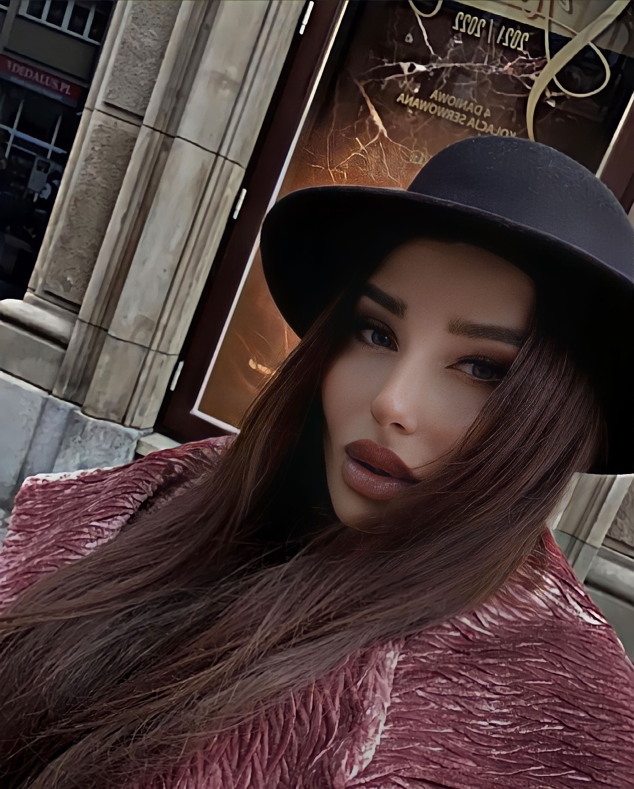
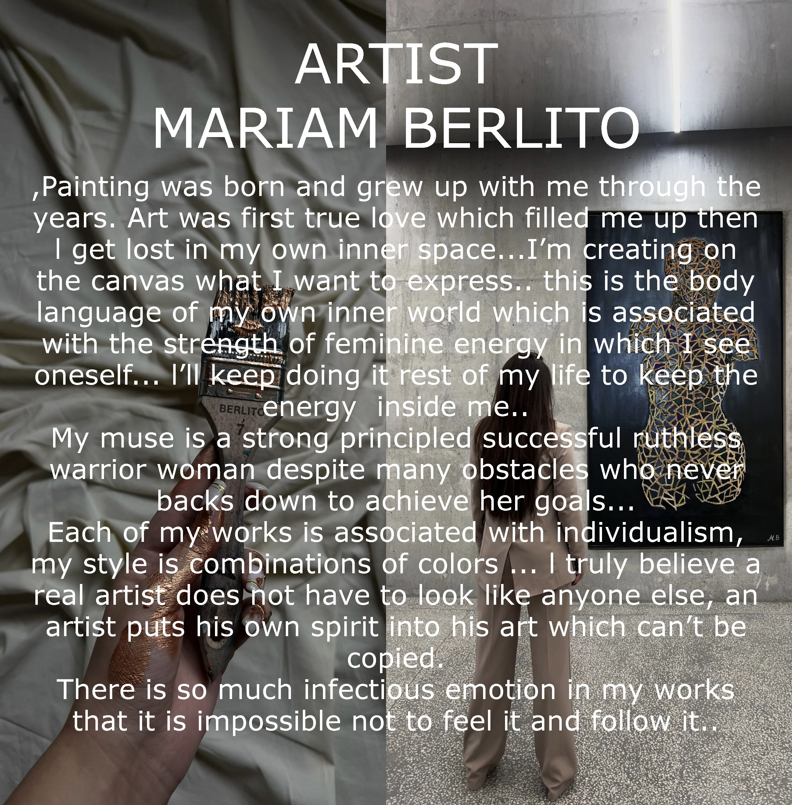
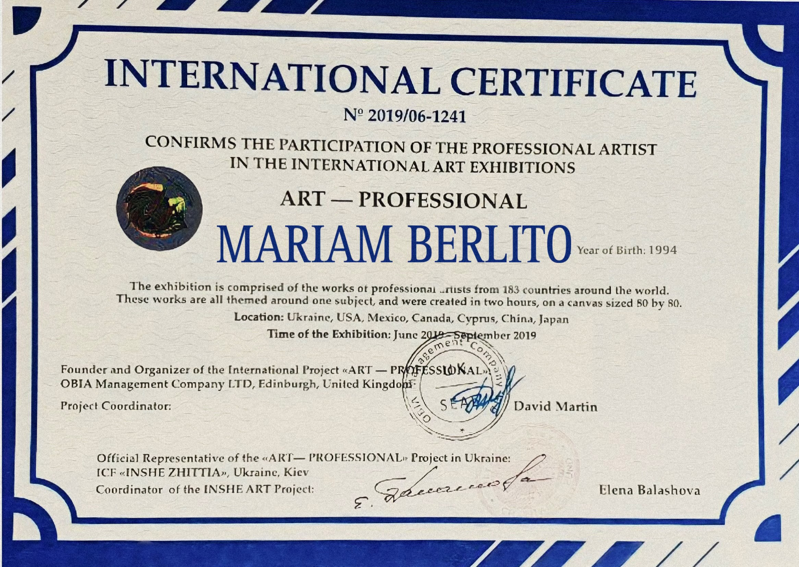
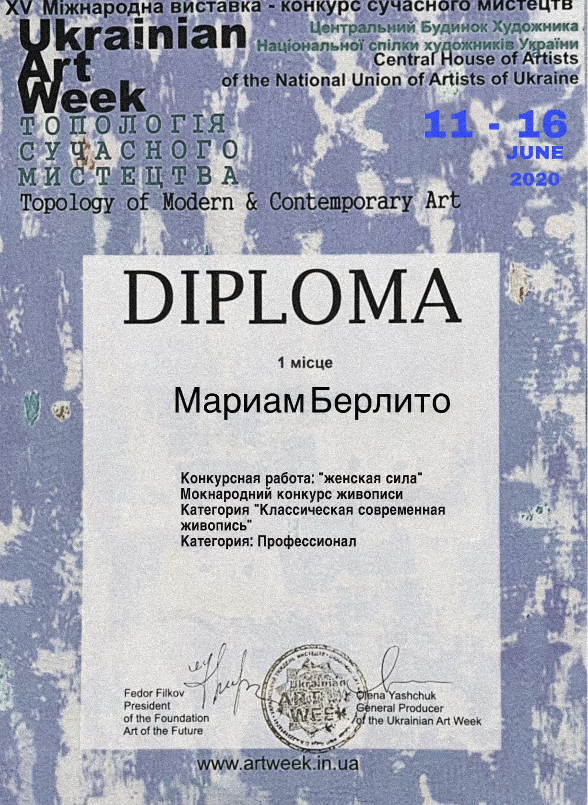
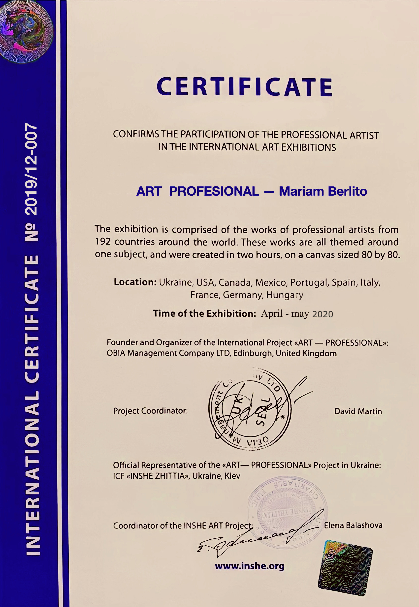
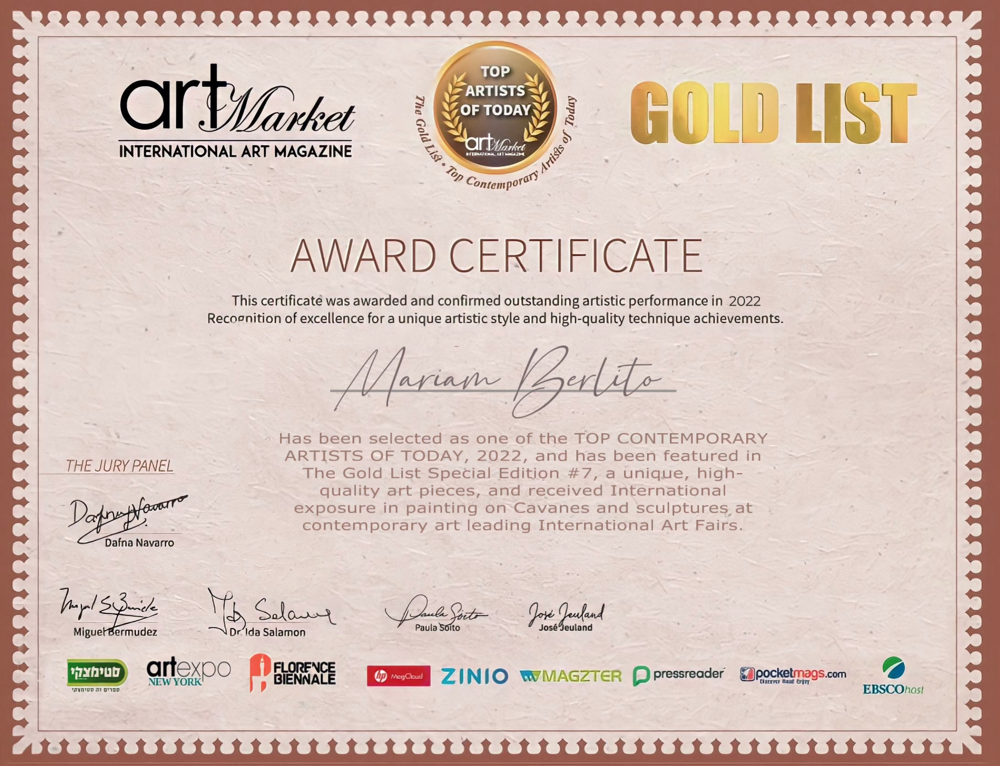

MARIAM BERLITO" (b. 7/10/1994, Tbilisi, Georgia) is a Georgian renowned
artist -painter
Her modern works are part of notable public and private collections worldwide. Berlito began painting in early childhood and received classical training in the Tbilisi State Academy of Arts. She has received numerous awards and competitive scholarships, such as the Presidential and Prime Minister Scholarships Scholarship Award, and holds an MFA with distinction from the New York Academy of Art.
Berlito is known for her unique style and thought-provoking works that blur the lines between representation and abstraction. The artist is deeply influenced by German modern painters and Italian art philosophy. Her artistic approach revolves around the theme of mutability, delving into the relationship between individual identity and the collective, spiritual power and fear, Sometimes she repeats certain imagery or forms in her work, creating a sense of unity and connection, while also highlighting the women's role within the social groups. Berlito examines the interplay between personal experiences and social or cultural influences, and the complexities of self-discovery.




